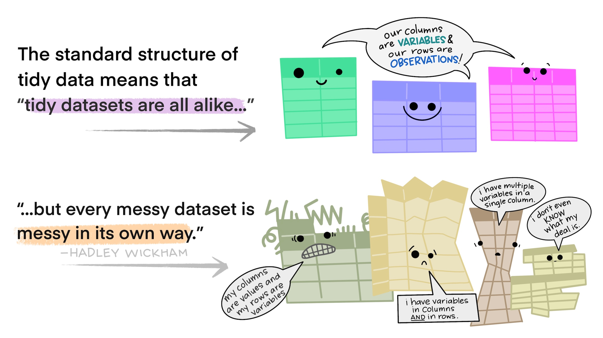
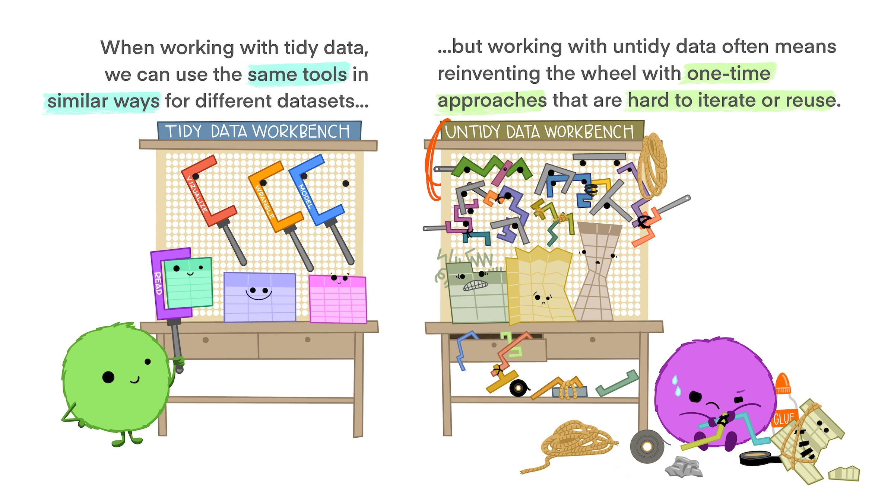
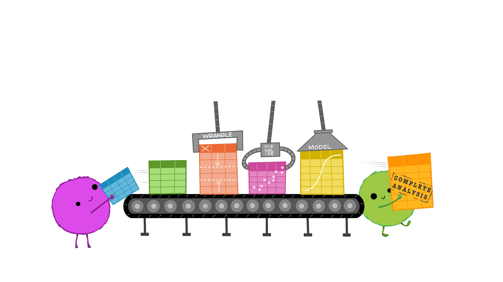

#> # A tibble: 6 × 3
#> department year rd_budget_mil
#> <chr> <dbl> <dbl>
#> 1 DOD 1976 35696
#> 2 NASA 1976 12513
#> 3 DOE 1976 10882
#> 4 HHS 1976 9226
#> 5 NIH 1976 8025
#> 6 NSF 1976 2372
This is the same dataset, but in long format, where each observation has its own row. Here you will notice that the department names are now variables, and the R&D spending is a single column. The year is repeated for each department.
How do we know which format a dataset is in?
A helpful heuristic is to ask yourself:
Do the names describe the values?
If Yes: “Long” format
If No: “Wide” format
3.2 Tidy data = “Long” format
When we refer to “tidy data”, we are referring to data in long format that follows the “tidy” principles:
Each variable has its own column
Each observation has its own row
You can verify that the federal spending dataset is in long format:
head(fed_spend_long)
#> # A tibble: 6 × 3
#> department year rd_budget_mil
#> <chr> <dbl> <dbl>
#> 1 DOD 1976 35696
#> 2 NASA 1976 12513
#> 3 DOE 1976 10882
#> 4 HHS 1976 9226
#> 5 NIH 1976 8025
#> 6 NSF 1976 2372
3.3 Reshaping data
We use the pivot_longer() and pivot_wider() functions to reshape data between long and wide formats.
#> # A tibble: 6 × 3
#> year department rd_budget_mil
#> <dbl> <chr> <dbl>
#> 1 1976 DOD 35696
#> 2 1976 NASA 12513
#> 3 1976 DOE 10882
#> 4 1976 HHS 9226
#> 5 1976 NIH 8025
#> 6 1976 NSF 2372
3.4 Tidy data wrangling
There’s a good reason why we like to keep our data in a long (tidy) format: it lets us use a consistent set of functions for manipulating, summarizing, and visualizing data.
Here’s a quick explanation with cute graphics, by Allison Horst:
  
3.4.1 Example 1: Total R&D spending in each year
This is a simple enough task, but with our data in wide format, we need to add each column manually like this:
fed_spend_wide %>%mutate(total = DHS + DOC + DOD + DOE + DOT + EPA + HHS + Interior + NASA + NIH + NSF + Other + USDA + VA) %>%select(year, total)
An alternative approach is to embrace the tidy data format. We’ll use pivot_longer() to convert the data into long format first, and then we’ll summarise the data:
#> Error in `geom_col()`:
#> ! Problem while computing aesthetics.
#> ℹ Error occurred in the 1st layer.
#> Caused by error:
#> ! object 'rd_budget_mil' not found
In wide format, we actually cannot plot the total by department, because there is no department variable!
Here we must first convert to long format, and then we can plot the data: